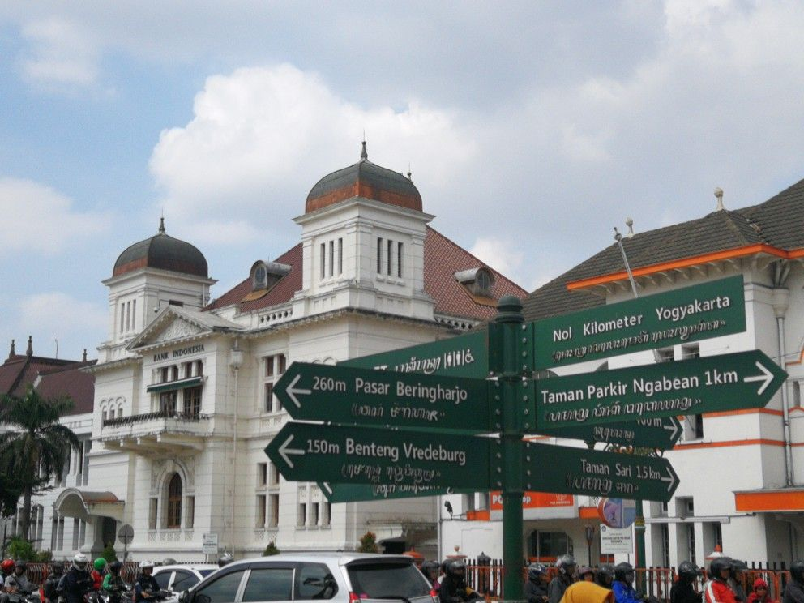
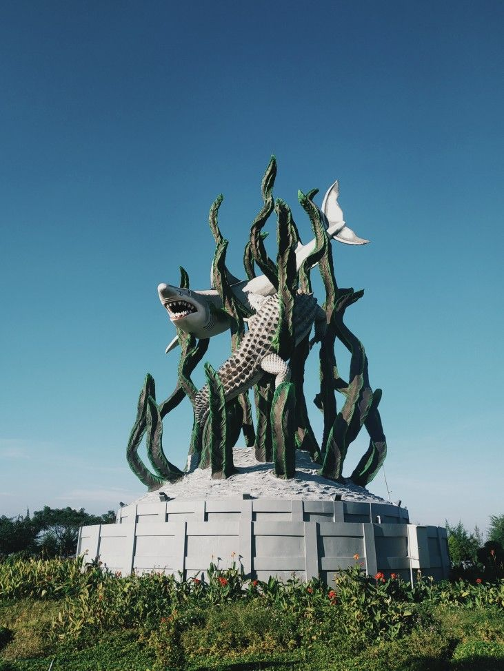
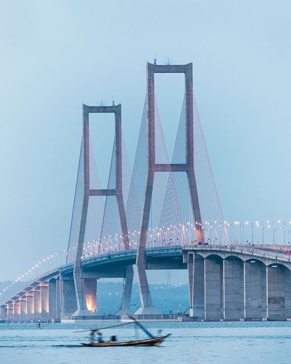

M
Y
T
W
O
F
A
V
O
R
I
T
E
C
I
T
I
E
S
A
R
E
People who use AI without understanding the basics will be completely confused if there is even the slightest error.
YOGYAKARTA CITY
Yogyakarta is a favorite city because it offers a complete package that is hard to find else where a very budget-friendly cost of living, a dynamic academic atmosphere as the "City of Students," and a magical blend of deep-rooted royal traditions and modern artistic creativity. From iconic angkringan street food to stunning beaches and historical temples, Jogja provides a relaxing "slow living" pace that makes every corner feel nostalgic, giving every visitor the heartwarming sensation of "coming home."

SURABAYA CITY
Surabaya is honestly the best! Even though the heat is sometimes just unreal, the city has such a unique vibe. You get these cool skyscrapers, but at the same time, you can still feel that nostalgic, aesthetic vintage soul—especially when you’re out taking photos around Tunjungan Street. And even though it’s a huge city, Surabaya is super neat; there are so many green parks to hang out in and the sidewalks are actually walkable. Not to mention the food is just top-tier, like Rawon or Rujak Cingur that are basically unbeatable. But what really makes me stay is the people—the 'Arek Suroboyo' might sound blunt, but they’re actually so solid and genuine. Honestly, Surabaya is the whole package; you get the modern vibes, the history, and that strong sense of community!


